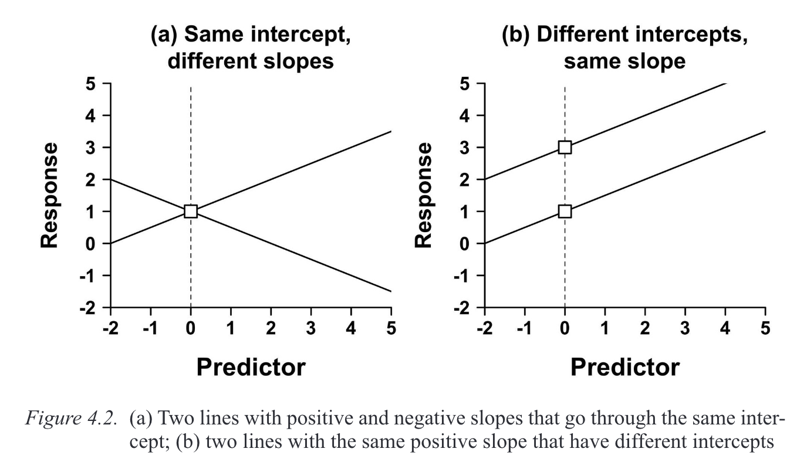
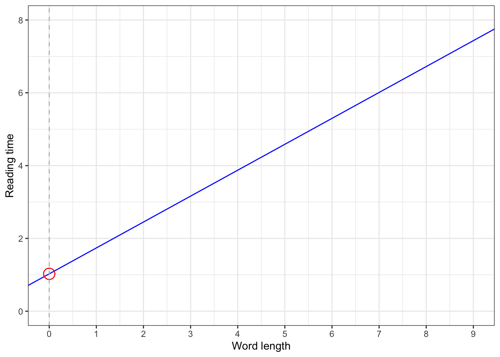
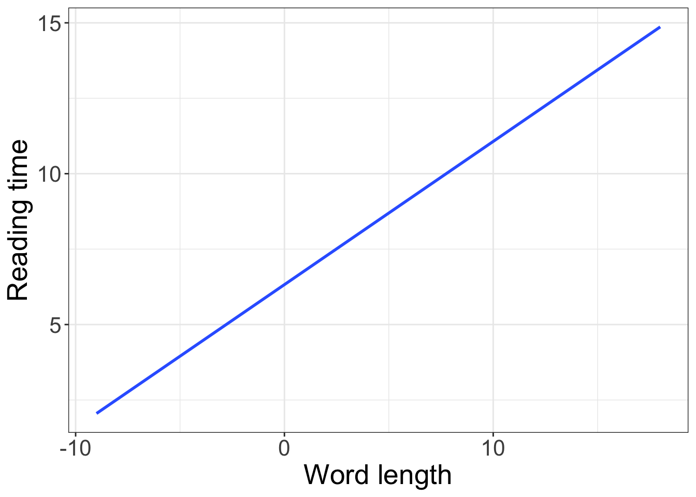
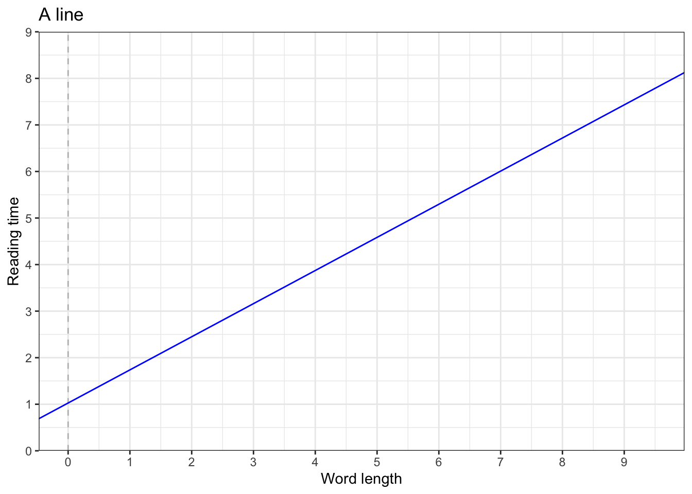
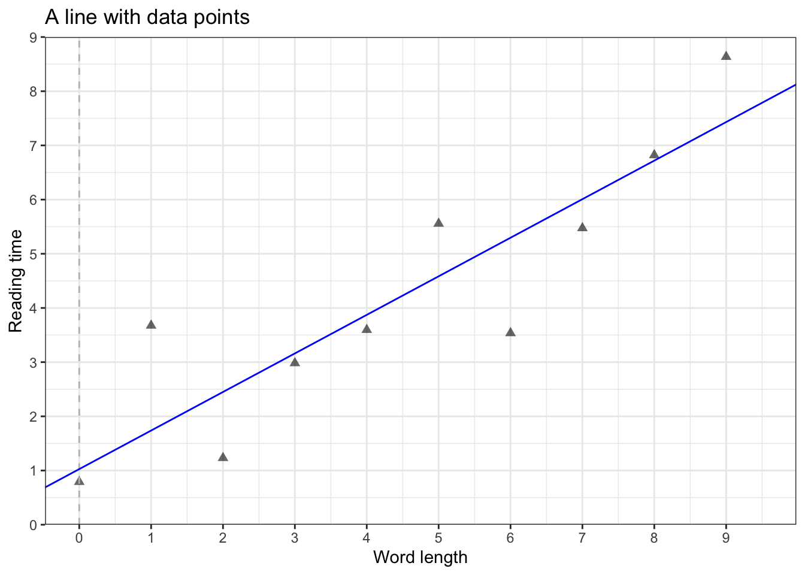
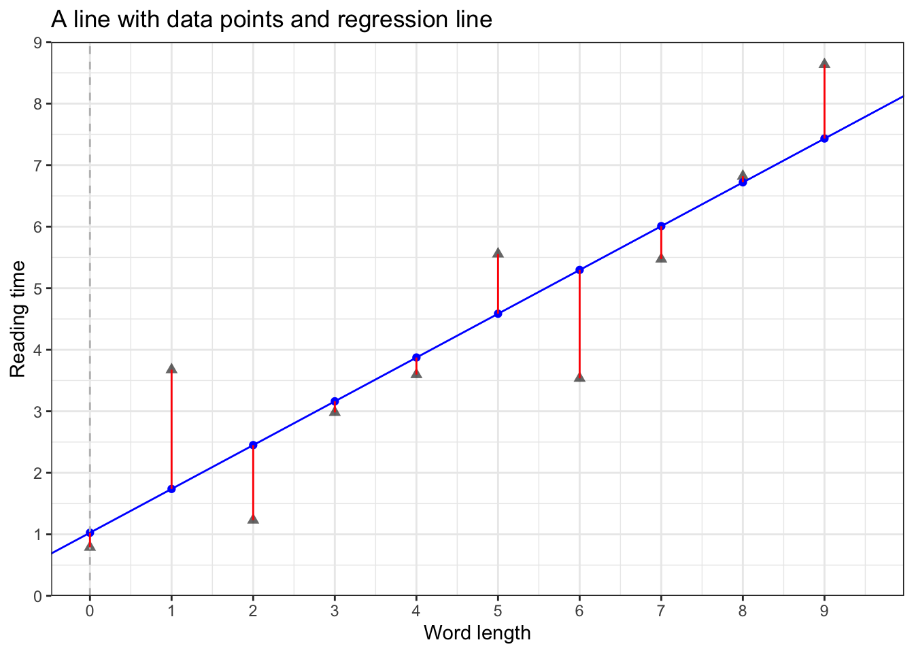
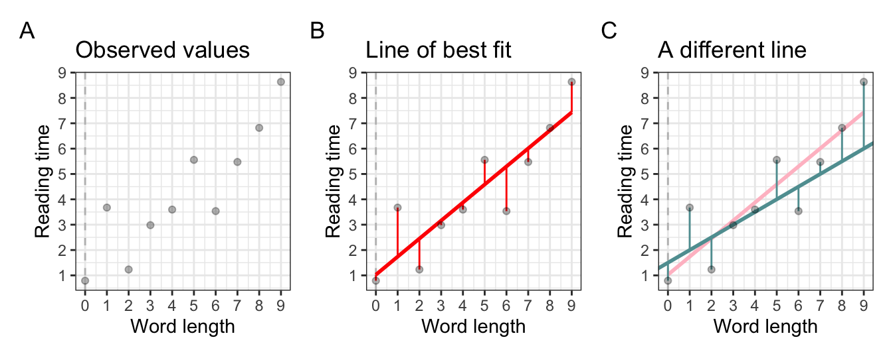
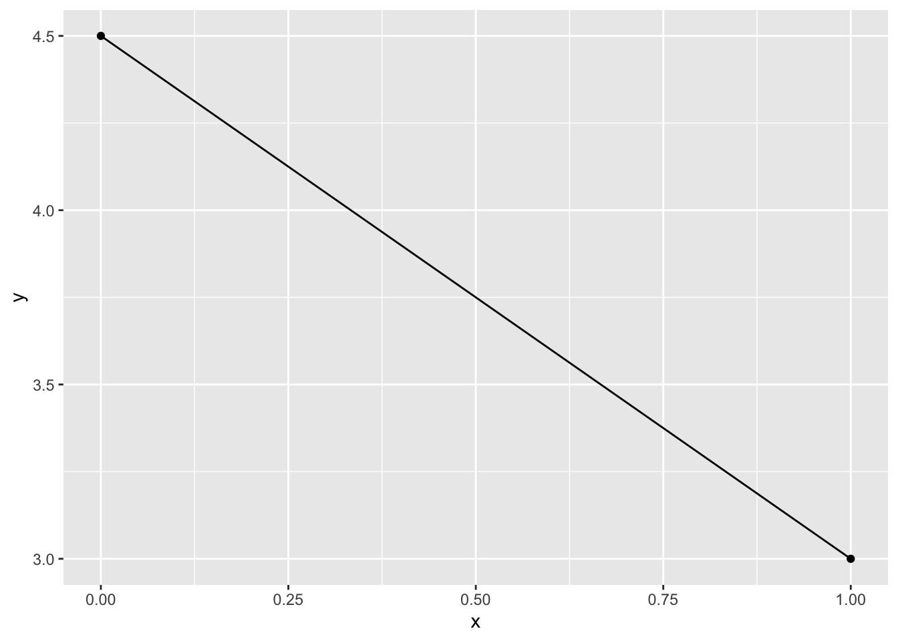

# suppress scientific notation
options(scipen=999)1 Understanding straight lines
Regression for Linguists
# load libraries
pacman::p_load(tidyverse,
broom,
patchwork,
knitr,
kableExtra,
gt,
googlesheets4)
# tell googlesheets4 we don't want private
gs4_deauth()Learning Objectives
Today we will learn…
- the equation of a line
- about intercepts, slopes, and residuals
Resources
This lecture is based on the readings for today’s session: Winter (2013) and Winter (2019) (Ch. 3), and to a lesser extent (debruine_understanding_2021?); Winter (2014).
1.1 When to model your data
By the time we get to the point of wanting to model our data, we should have a pretty good idea of how our data look. We achieve this through running an exploratory data analysis (EDA), which consists of visualising your data and determining outliers (a question for another day: what is an outlier?), generating summary (i.e., descriptive) statistics, and just overall getting to know your data, without making any claims beyond your data.
However, an understanding of the data design and collection procedure is incredibly important and is necessary in order to appropriately fit a model to our data. In fact, planning out your analyses when designing your experiment is highly recommended in order to ensure your data will have the appropriate structure and that the assumptions made by your chosen analyses are taken into consideration before data collection.
The next step after conducting an EDA is to model your data, i.e., run inferential statistics, this is where we try to generalise beyond our data.
1.1.1 Statistical tests versus models
Many statistical courses and textbooks still put undue emphasis on classical statistical tests. However, these common statistical tests are simplified linear models, without the added benefits of linear models. In essence, statistical tests tell us something about our data, whereas statistical models can be used to make predictions about hypothetical future observations.
1.2 (Linear) Regression
Data exploration gives us an idea about what our data look like, but if we want to be able to make predictions about hypothetical observations, i.e., to predict values of our DV based on one (or more) IV(s), we need to fit a model to our data. This model can then predict values of our DV based on one (or more) IV(s), i.e., predicting an outcome variable (dependent variable, DV) from one or more predictors (independent variable, IV). Because we’re making predictions, we need to take into account the variability (i.e., error) in our data.
1.2.1 Types of regression
| regression type | predictor | outcome |
|---|---|---|
| simple regression | Single predictor | continuous (numerical) |
| multiple regression | multiple predictor | continuous (numerical) |
| hierarchical/linear mixed models/linear mixed effect models | include random effect | continuous (numerical) |
| generalised linear (mixed) models: logistic regression | as above | binary/binomial data |
| generalised linear (mixed) models: poisson regression | as above | count data |
1.3 Straight lines
- linear regression summarises the data with a straight line
- we model our data as/fit our data to a straight line
- straight lines can be defined by
- Intercept (\(b_0\))
- value of \(Y\) when \(X = 0\)
- Slope (\(b_1\))
- gradient (slope) of the regression line
- direction/strength of relationship between \(x\) and \(y\)
- regression coefficient for the predictor
- Intercept (\(b_0\))
- so we need to define an intercept and a slope
1.3.1 A line = intercept and slope
- a line is defined by its intercept and slope
- in a regression model, these two are called
coefficients
- in a regression model, these two are called

Equation of a line
\[\begin{align} y & = mx + c\\ Y_i &= (b_0 + b_1X_i) \\ outcome_i & = (model) \\ y_i & = (intercept + slope*x_i) \end{align}\]
1.3.2 Intercept (\(b_0\))
- the value of \(y\) when \(x = 0\)

1.3.3 Slopes (\(b_1\))
A slope describes a change in \(y\) (\(\Delta y\)) over a change in \(x\) (\(\Delta x\)), where \(\Delta\) (the Greek letter delta) can be read as ‘difference’. So a slope’s value equals the difference in \(x\) for a difference of 1 unit in \(y\). Positive slopes indicate that as \(x\) increases, \(y\) increases. A negative slope value indicates that as \(x\) increases, \(y\) decreases (or vice versa). A slope of 0 indicates there is no change in \(y\) as a function of \(x\), or: there is no change in \(y\) when the value of \(x\) changes.
\[\begin{align} slope = \frac{\Delta y}{\Delta x} \end{align}\]
This relationship between \(x\) and \(y\) is sometimes referred to as “rise over run”: how do you ‘rise’ in \(y\) for a given ‘run’ in \(x\)? For example, if we were to measure children’s heights and ages, we would expect to find an increase in height for every increase in age. Or, for a linguistic example, we would expect to find longer whole-sentence reading times (a measure variable) for longer texts: if a sentence has 9 words (I find straight lines to be really interesting and fun.), we would expect longer reading times than a sentence with 3 words (I love lines.).
- what is the intercept of this line?
- what is the slope of this line?

1.4 Error and residuals
- fixed effects (IV/predictors): things we can understand/measure
- error (random effects): things we cannot understand/measure
- in biology, social sciences (and linguistic research), there will always sources of random error that we cannot account for
- random error is less an issue in e.g., physics (e.g., measuring gravitational pull)
- residuals: the difference (vertical difference) between observed data and the fitted values (predicted values)
Equation of a line
\[\begin{align} y & = mx + c\\ Y_i &= (b_0 + b_1X_i) + \epsilon_i\\ outcome_i & = (model) + error_i\\ y_i & = (intercept + slope*x_i) + error_i \end{align}\]



1.4.1 Method of least squares
- so how is any given line chosen to fit any given data?
- the method of least squares
- take a given line, and square all the residuals (i.e., \(residual^2\))
- the line with the lowest sum of squares is the line with the best fit to the given data
- why do we square the residuals before summing them up?
- so all values are positive (i.e., so that negative values don’t cancel out positive values)
- this is how we find the line of best fit
- R fits many lines to find the one with the best fit

Learning Objectives 🏁
Today we learned…
- the equation of a line
- about intercepts, slopes, and residuals
Important terms
| Term | Definition | Equation/Code |
|---|---|---|
| Intercept | Value of y for x=0 | b0 |
| Slope | a change in x over a change in y; regression coefficient for the predictor. Positive as x increases, y increases. Negative slopes, as x increases y decreases. | b1 |
| residuals/error | difference between observed data and the fitted values | tidy(model_name)$.resid |
| interaction term | used to describe how effects of one predictor may be influenced by changes in another predictor | lm(response ~ predictor1*predictor2, data = data) |
1.5 Tasks
1.5.1 Task 1: pen-and-paper
You will receive a piece of paper with several grids on it. Follow the instructions, which include drawing some lines. If you aren’t in-class, this is the paper we are using:
1.5.2 Task 2: simulating data
All of the figures we just saw (except Figure 1.1, which is from Winter (2019)) were generated in R. Simulating data and plotting is a great way to understand concepts, or even to map out our hypotheses. Let’s use R for the first time to try to simulate some data in order to plot lines. Our goal will be to produce a line that has the following:
- intercept = 4.5
- slope = 3
1.5.2.1 Planning
First, think about what steps will be required to create such plots. Can you come up with a workflow plan (without peaking at the next tasks)?
1.5.2.2 Producing our line
x <- c(0,1)
y <- c(4.5,3)
data <- cbind(x,y) |> as.data.frame()
ggplot(data = data) +
aes(x = x, y = y) +
geom_line() +
geom_point()
Session Info
Developed with Quarto using R version 4.3.0 (2023-04-21) (Already Tomorrow) and RStudio version 2023.9.0.463 (Desert Sunflower), and the following packages:
sessionInfo()R version 4.3.0 (2023-04-21)
Platform: aarch64-apple-darwin20 (64-bit)
Running under: macOS Ventura 13.2.1
Matrix products: default
BLAS: /Library/Frameworks/R.framework/Versions/4.3-arm64/Resources/lib/libRblas.0.dylib
LAPACK: /Library/Frameworks/R.framework/Versions/4.3-arm64/Resources/lib/libRlapack.dylib; LAPACK version 3.11.0
locale:
[1] en_US.UTF-8/en_US.UTF-8/en_US.UTF-8/C/en_US.UTF-8/en_US.UTF-8
time zone: Europe/Berlin
tzcode source: internal
attached base packages:
[1] stats graphics grDevices utils datasets methods base
other attached packages:
[1] googlesheets4_1.1.0 gt_0.9.0 kableExtra_1.3.4
[4] knitr_1.44 patchwork_1.1.3 broom_1.0.5
[7] lubridate_1.9.2 forcats_1.0.0 stringr_1.5.0
[10] dplyr_1.1.3 purrr_1.0.2 readr_2.1.4
[13] tidyr_1.3.0 tibble_3.2.1 ggplot2_3.4.3
[16] tidyverse_2.0.0
loaded via a namespace (and not attached):
[1] gtable_0.3.4 xfun_0.39 htmlwidgets_1.6.2 lattice_0.21-8
[5] gargle_1.4.0 tzdb_0.4.0 vctrs_0.6.3 tools_4.3.0
[9] generics_0.1.3 curl_5.0.1 fansi_1.0.4 highr_0.10
[13] pacman_0.5.1 pkgconfig_2.0.3 Matrix_1.5-4 webshot_0.5.4
[17] lifecycle_1.0.3 farver_2.1.1 compiler_4.3.0 munsell_0.5.0
[21] sass_0.4.6 htmltools_0.5.5 yaml_2.3.7 pillar_1.9.0
[25] magick_2.7.4 nlme_3.1-162 tidyselect_1.2.0 rvest_1.0.3
[29] digest_0.6.33 stringi_1.7.12 splines_4.3.0 labeling_0.4.3
[33] rprojroot_2.0.3 fastmap_1.1.1 grid_4.3.0 here_1.0.1
[37] colorspace_2.1-0 cli_3.6.1 magrittr_2.0.3 utf8_1.2.3
[41] withr_2.5.0 scales_1.2.1 backports_1.4.1 googledrive_2.1.0
[45] timechange_0.2.0 rmarkdown_2.22 httr_1.4.6 cellranger_1.1.0
[49] png_0.1-8 hms_1.1.3 evaluate_0.21 viridisLite_0.4.2
[53] mgcv_1.8-42 rlang_1.1.3 Rcpp_1.0.11 glue_1.6.2
[57] xml2_1.3.4 svglite_2.1.1 rstudioapi_0.14 jsonlite_1.8.7
[61] R6_2.5.1 systemfonts_1.0.4 fs_1.6.2